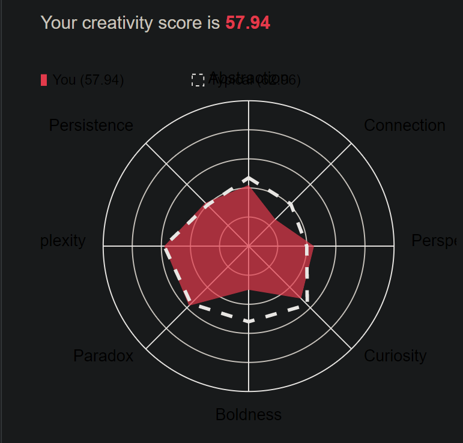

What these Test results mean for me: These tests results seem mildly accurate however they don’t mean too much to me. It obviously isn’t quite horoscopes level of vagueness, this is because they do ask personal questions rather than relying on the period of time in which you were born or whatever nonsense it is. But the descriptions seem to over the top to the point that I find it funny. For example, ““Without necessarily knowing how they do it, people with this personality type often have a Sherlock Holmes–like knack for spotting discrepancies and irregularities. In other words, it’s a bad idea to lie to them.” Exaggerations aside I find most of this information at least partially aligns with my own feelings.
How I think these results may influence my behaviour in a team: I don’t think it’s the test results per say that are influencing my behaviour. However, I do know what the question is trying to ask. In terms of the introverted/extraverted scale, I came out 79% introverted. Whether or not that is accurate I’m not really sure, but I do feel less likely to be the one trying to start a conversation than others. This could affect my participation in group work or just engaging with my team so there’s that.
How I should take this into account when forming a team: Knowing this information, I should probably make an attempt to communicate with my group more than I would normally like to.
What these Test results mean for me: I don’t believe in preferred learning styles, so these test results mean very little to me. I think that my preferred learning style depends more on what I’m trying to learn rather than what form I’d prefer it to be in. An example of this would be learning how to kick a ball. If my goal was to learn to kick the ball well, it would be better for me to physically do that rather than watch people do it (which is supposedly my preferred learning style)
How I think these results may influence my behaviour in a team: These test results would do very little in terms of influencing my behavior in a team. Or at least I highly doubt they would. But if it were the case that they would, I would probably try to visually take in new information rather than auditorily or kinesthetically. Assuming these results are in fact correct.
How I should take this into account when forming a team: I’ve actually got no idea how I would use this information when forming a team… maybe visualize my team forming or something... or maybe convince my team that it would be best for them to show me visual information rather than other forms.
What these Test results mean for me: I’m not exactly sure on how to interpret this information. However, both connection and boldness seem to be less than the others. It would appear that I’m less able to from connections between strange things and lack the confidence to push boundaries. I find this information very amusing.
How I think these results may influence my behaviour in a team: I don’t think this information will influence my behavior at all. This seems less accurate than the other tests.
How I should take this into account when forming a team: I’m literally just not going to take this into account.
Yes this is the result I was shown.